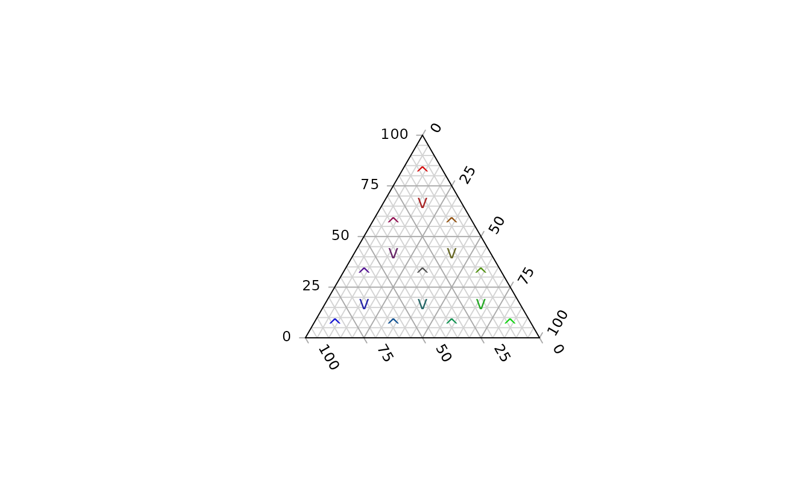

Intended to facilitate coloured contour plots with ColourTernary(),
TernaryPointValue() evaluates a function at points on a triangular grid;
TernaryDensity() calculates the density of points in each grid cell.
Arguments
- Func
Function taking vectors of coordinates
a,bandc, which returns a numeric vector whose value at each coordinate will be depicted.- resolution
The number of triangles whose base should lie on the longest axis of the triangle. Higher numbers will result in smaller subdivisions and smoother colour gradients, but at a computational cost.
- direction
(optional) Integer specifying the direction that the current ternary plot should point: 1, up; 2, right; 3, down; 4, left.
- ...
Additional parameters to
Func().- coordinates
A list, matrix, data.frame or vector in which each element (or row) specifies the three coordinates of a point in ternary space.
Value
TernaryPointValues() returns a matrix whose rows correspond to:
x, y: co-ordinates of the centres of smaller triangles
z: The value of
Func(a, b, c), wherea,bandcare the ternary coordinates ofxandy.down:
0if the triangle concerned points upwards (or right),1otherwise
See also
Other contour plotting functions:
ColourTernary(),
TernaryContour(),
TernaryDensityContour()
Examples
TernaryPointValues(function(a, b, c) a * b * c, resolution = 2)
#> [,1] [,2] [,3] [,4]
#> x -0.25000000 0.00000000 0.25000000 0.00000000
#> y 0.14433757 0.28867513 0.14433757 0.57735027
#> z 0.01851852 0.03703704 0.01851852 0.01851852
#> down 0.00000000 1.00000000 0.00000000 0.00000000
TernaryPlot(grid.lines = 4)
cols <- TernaryPointValues(rgb, resolution = 4)
text(as.numeric(cols["x", ]), as.numeric(cols["y", ]),
labels = ifelse(cols["down", ] == "1", "v", "^"),
col = cols["z", ]
)

TernaryPlot(axis.labels = seq(0, 10, by = 1))
nPoints <- 4000L
coordinates <- cbind(
abs(rnorm(nPoints, 2, 3)),
abs(rnorm(nPoints, 1, 1.5)),
abs(rnorm(nPoints, 1, 0.5))
)
density <- TernaryDensity(coordinates, resolution = 10L)
ColourTernary(density)
TernaryPoints(coordinates, col = "red", pch = ".")